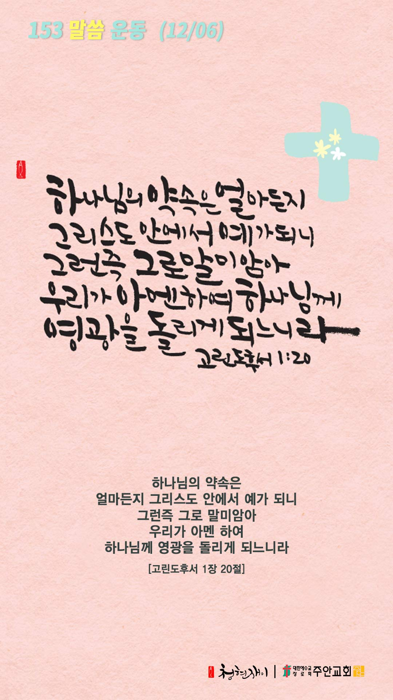

온라인 기도실 안내
2020년 12월06일(일)~12월12일(토)
- 온라인 기도실은 온 회중이 함께 하나님께 나아가는 자리입니다
- 30분 정도 여유를 가지고 하시길 바랍니다
- 말씀과 묵상, 찬양과 기도로 함께 합니다
- 배경 음악이 나올 수 있습니다 볼륨을 조절해주세요
준비가 되셨으면 아래의 버튼을 눌러주세요
찬양, 주의 성실을 찬양하리이다
(시71:22)
- 가사를 묵상하며 읽습니다
나의 피난처 예수 의지해요
나의 피난처 예수 의지해요
나의 가는 길에 거센 바람 몰아쳐와도
나의 피난처 예수 의지해요
나는 영원히 주님 사랑해요
나는 영원히 주님 사랑해요
세상 어떤 것도 나의 사랑 끊을 수 없네
나는 영원히 주님 사랑해요
아바 아버지 나를 사랑하시니
나의 모든 것 주께 드려요
아바 아버지 내가 여기 있으니
주님 영광 위하여 써주세요
찬양, 주의 성실을 찬양하리이다
(시71:22)
나의 피난처 예수 by 시와 그림
위의 찬양이 끝나면 말씀읽기를 눌러주시면 됩니다
말씀하옵소서, 주의 종이 듣겠나이다
(삼상3:10)
오늘의 말씀입니다
음악 소리가 크면 조절하시기 바랍니다
"나의 피난처 예수" 연주 by 이지선

마음의 묵상
(고후 1:20)
“하나님의 약속은 얼마든지 그리스도 안에서 예가 되니 그런즉 그로 말미암아 우리가 아멘 하여 하나님께 영광을 돌리게 되느니라”
1. 하나님의 약속이 그리스도 안에서 “예”가 된다는 뜻이 무엇일까요?
2. 하나님의 약속에 믿음으로 “아멘” 하고 계신가요?
3. “아멘”으로 믿음의 응답을 할 때 어떤 결과가 나타나나요?
주님의 약속을 신뢰하며 아멘으로 순종합니다
회개, 삶의 방향을 바꾸는 결정
주권자를 인정하는 것이 회개의 시작입니다
“주권자가 네게 분을 일으키거든 너는 네 자리를 떠나지 말라 공손함이 큰 허물을 용서 받게 하느니라”
- 전도서 10장4절 -
3분 정도 회개하며 주님 앞에 나아갑니다
내 중심이 주를 간절히 구하오리니
(사26:9)
- 다음의 말씀을 소리 내어 읽습니다
마틴 루터의 기도
저는 엄청난 죄를 짓고 전혀 감사할 줄 몰랐음을 고백하고 인정합니다.
평생 안식을 터무니없이 활용했고 하나님의 소중하고 사랑스런 말씀을 그릇된 방식으로 무시했습니다.
저는 너무 게으르고 활기를 잃고 나태하여 말씀에 귀를 기울이지 않았고 진심으로 관심을 갖거나 감사하지 않았습니다.
내 중심이 주를 간절히 구하오리니
(사26:9)
- 다음의 말씀을 소리 내어 읽습니다
마틴 루터의 기도
사랑의 하나님께서 주신 말씀을 무의미하게 여겼고 귀한 보화를 외면하고 짓밟아버렸습니다.
하나님은 이러한 저를 크고 거룩한 자비로 인내하시며 끝까지 사랑해주셨습니다.
주님은 저에게 끊임없이 교훈하시고 제가 이미 받은 구원의 감격을 기억나게 하셨습니다.
때문에 저는 회개하고 은총과 용서를 구합니다.
하나님 나라
1. 하나님의 나라가 속히 이 땅에 임하게 하소서
하나님 아버지, 지금 전 인류가 겪고 있는 모든 혼란과 고통의 근본적인 원인이 인생들의
교만에 있음을 깨닫고 회개하고 하나님께 돌아와 오직 하나님만을 경외하게 하소서.
간절한 마음으로 3분 정도 기도합시다
남과 북
2. 남북한이 속히 복음으로 통일되게 하소서
하나님 아버지, 북한의 김정은 정권이 상식이 통하는 정권이 되게 하시고,
정치, 경제적으로 문호를 개방하여 북한 동포들이 가난과 질병과 독재로부터 해방되게 역사 하소서.
간절한 마음으로 3분 정도 기도합시다
대한민국
3. 우리나라가 하나님을 경외하는 나라가 되게 하소서
하나님 아버지, 우리나라가 생명을 존중하는 나라가 되게 하시고,
생명의 주권이 오직 하나님께 있음을 깨달아 정부에서 입안하고 있는 낙태법 개정안이 국회에서 통과되지 않게 하소서.
간절한 마음으로 3분 정도 기도합시다
한국교회
4. 한국교회가 성령으로 새롭게 부흥되게 하소서
하나님 아버지, 한국교회와 지도자들이 성장주의, 외형주의, 개교회주의,
교파주의 그리고 목회세습 등의 세속화된 모습을 회개하게 하시고, 성령의 능력으로 새롭게 개혁되게 하소서.
간절한 마음으로 3분 정도 기도합시다
주안교회
5. 주안교회가 선교적 삶으로 세상을 섬기고 치유하게 하소서
하나님 아버지, 주안의 모든 성도들이 오직 하나님만을 경외하는 신앙위에 굳게 서게 하시고,
죄의 유혹에 자기를 스스로 파는 어리석음을 범하지 않게 도우소서.
간절한 마음으로 3분 정도 기도합시다
감사의 기도
- 오늘 기도를 인도하신 주님께 감사를 올려드립니다
- 아래의 구절을 읽고 주님께 감사의 마음을 올려드립시다
“주께서 내게 응답하시고 나의 구원이 되셨으니 내가 주께 감사하리이다”
- 시편 118장 21절 -
고요한 가운데 잠시 침묵하시기 바랍니다
파송, 세상을 향하여
- 오늘의 온라인 기도를 마쳤습니다
기도를 들으신 주님께서 평안히 가라 하십니다
주님께서 우리와 함께 하시니 두려울 것이 없습니다
새벽을 깨우며
- 새벽기도회 안내입니다